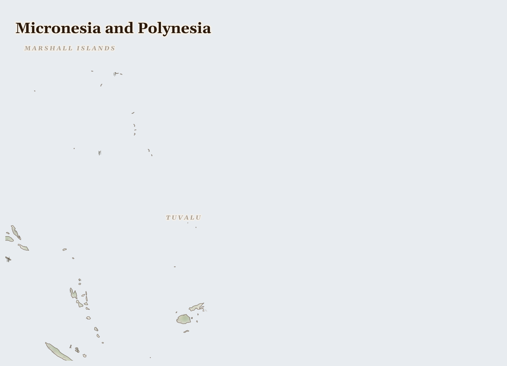

Micronesia and Polynesia1M people
where ENSO swings storm and surge over coral atolls whose freshwater lens floats a few metres thin on salt
Lives Lived Here
Before the king tide peaks, a woman in Funafuti tends the taro pit she digs to the freshwater lens — the two-to-five-metre layer of fresh water floating beneath the coral sand that is the only agricultural soil and the only drinking water her atoll possesses. She checks the pit's depth, the soil's moisture, the taste of the water at the bottom for any trace of salt. Last night's tide was higher than forecast. She doesn't know yet what it found.
In the Marshall Islands, a woman in Springdale, Arkansas — one of the largest Marshallese communities in the United States, settled under the Compact of Free Association — sends a wire transfer home to her aunt on Majuro. The transfer includes money for the water filtration unit that US nuclear compensation partially funded, which her aunt needs because the tap water in Majuro is not safe to drink untreated, a condition that has held since the nuclear testing era. Her aunt sends back photographs of her grandchildren on the reef flat. The reef is bleaching.
In Auckland, a young Tongan man picks kiwifruit on a Recognised Seasonal Employer visa. He sends money home every month — part of the remittances that provide 40% of Tonga's GDP. His village was damaged in Cyclone Winston in 2016 and hasn't fully recovered. His family wants him to stay in New Zealand permanently; he wants to go home. The Falepili Union between Tuvalu and Australia, which offers permanent residency as "migration with dignity," has made him think differently about the difference between a visa and a future.
In Palau, a ranger from the government's enforcement division patrols the boundary of the National Marine Sanctuary — 500,000 km² of ocean closed to commercial fishing since 2015 — in a boat paid for by the conservation revenue the sanctuary generates. Below the hull, the reef holds the highest marine biodiversity per unit area anywhere on earth. The water is 29.5°C — 1.5°C above the bleaching threshold for the most sensitive corals. He notes the water temperature and radios it in. This is what there is left to do.
In Auckland, a young Tongan man picks kiwifruit on a Recognised Seasonal Employer visa. He sends money home every month — part of the remittances that provide 40% of Tonga's GDP. His village was damaged in Cyclone Winston in 2016 and hasn't fully recovered. His family wants him to stay in New Zealand permanently; he wants to go home. The Falepili Union between Tuvalu and Australia, which offers permanent residency as "migration with dignity," has made him think differently about the difference between a visa and a future.

Reference map. Country boundaries and features are approximate.
What Presses
The weight on Micronesia and Polynesia
Funafuti Atoll, Tuvalu — The largest island in Tuvalu is 400 metres wide at its widest point. The ocean lies on both sides, and in king tide season it meets in the middle. A woman checks the taro pit she tends at the centre of the island — the pit she digs down to the freshwater lens, the only soil agricultural enough to grow food. Last night's tide brought water across the southern end of the island; she doesn't know yet if it reached the pit. If it did, the taro is ruined, and the saltwater that replaced it will need weeks to drain before she can plant again. Tuvalu has signed an agreement with Australia giving all 12,000 Tuvaluans the right to live there permanently. It is called "migration with dignity." The taro pit does not know this yet.
Bikini Atoll, Marshall Islands — The Bikini Islanders have not been home since 1946, when the United States relocated them to make room for nuclear testing. Twenty-three tests later, including the first hydrogen bomb ever detonated, the atoll remains contaminated. In 1968 the US declared it safe and encouraged the Bikinians to return; by 1978 the contamination was confirmed too severe and they were relocated again. The Runit Dome on Enewetak — a concrete cap over plutonium-contaminated soil and debris from 43 nuclear tests — was built in 1980 to contain what could not be cleaned. The dome is cracking. The sea is rising into the crater below it. The Marshall Islands Nuclear Claims Tribunal awarded $2 billion in compensation in 2000. The US has paid approximately $150 million.
South Pacific Ocean — Tuvalu earns approximately $8-10 million annually from the .tv internet domain — used by Twitch, YouTube TV, and streaming platforms whose servers are nowhere near the Pacific. This is a significant share of the government's revenue. The 12,000 citizens of Tuvalu face national inundation within decades. Their government is simultaneously maintaining the international legal position that Tuvalu remains a state even as its physical territory disappears — arguing at the UN for the principle that statehood is not contingent on land above sea level. This argument has not yet won. The sea does not wait for legal precedent.
Tuna worth billions leaves the Pacific each year in the holds of distant-water fleets; what returns to the atoll nations is a licence fee that sustains governments but not fishing communities. The Marshall Islands gave their land and their health to 67 US nuclear tests; what returned was $150 million of a $2 billion award. The world's emissions are rising the sea beneath nations that contributed less than 0.1% of them; what the international climate system has returned is aspirational targets and a Loss and Damage fund capitalised at $700 million — for nations facing existential loss. tuna fishing licenses, tuna licenses and .tv domain, tuna licenses and Compact funding leaving.
That a nation can insist on its sovereignty while its land disappears beneath the waves is an act of faith the rest of the world has not yet answered. We are the rest of the world.
For Prayer
For the nations at one to two metres above sea level — whose taro pits are flooded by king tides in February and March, whose freshwater lenses thin with each storm overwash, whose governments are negotiating migration agreements and purchasing land in other countries while insisting on their continued sovereignty. That the world's response matches the scale of the injustice.
For the Bikini Islanders who have not been home since 1946 — eighty years — and for the Enewetak community living with the Runit Dome, a concrete cap over plutonium-contaminated debris, cracking as the ocean rises around it. That the United States pays what the Nuclear Claims Tribunal awarded, and that the contamination is contained before the dome fails entirely.
For the two-to-five-metre freshwater layer beneath the coral sand of Pacific atolls — the sole drinking water and agricultural water source for 100,000 people — which thins with each storm overwash and each dry season and each year's sea-level rise. That it holds long enough for the people above it to find safety.
For Palau's Rock Islands, Kiribati's Phoenix Islands, and the coral reefs that sustain coastal communities across nine nations — providing shoreline protection and 50-90% of dietary protein — now bleaching under ocean temperatures exceeding the thermal tolerance of corals that have survived three thousand years of Pacific variation. That some survive what is coming.
For the Tongan community in Auckland, the Marshallese community in Springdale, Arkansas, the Tuvaluans in Auckland and Sydney — sending remittances home to islands they may never permanently return to, holding the culture, the language, and the political claim of nations whose physical territory is disappearing. That their identity outlasts the land.
For the Pacific Island delegates at UNFCCC, AOSIS, and the Loss and Damage Fund negotiations — making the legal case that a nation's existence cannot be measured only in tonnes of CO2, that sovereignty does not require land above sea level, and that the $700 million Loss and Damage Fund is not a serious response to the loss of nations. That they are heard.
Give thanks for Palau's 2015 decision to close 80% of its EEZ as a marine sanctuary — forgoing the revenue those waters would have generated, choosing ecosystem integrity over immediate income, insisting that the ocean has a future worth protecting. That this choice is recognised for what it is: a form of sovereignty asserted at cost.
Out of the depths have I cried to you, O Lord; Lord, hear my voice; let your ears consider well the voice of my supplication.
Most merciful God, who by the death and resurrection of your Son Jesus Christ delivered and saved the world: grant that by faith in him who suffered on the cross we may triumph in the power of his victory; through Jesus Christ your Son our Lord, who is alive and reigns with you, in the unity of the Holy Spirit, one God, now and for ever.
Amen.
Seeds of Hope
Palau's 2015 decision to close 80% of its EEZ as a marine sanctuary — forgoing the licensing revenue those waters would have generated — is the Pacific's most striking assertion of ecological sovereignty: a small island nation choosing long-term ecosystem integrity over short-term revenue.
For Reflection
What would it mean to accept this contradiction—that your comfort and their suffering exist in the same global system—rather than trying to resolve it from the outside?
How might sitting with this discomfort change how you pray?
Looking Ahead
- King tide season continues through March — the next peak spring tides will test the freshwater lenses across Kiribati, Tuvalu, and the Marshall Islands over the coming weeks, with the 26% precipitation deficit making each overwash event more damaging.
- NOAA's extended bleaching outlook projects continued elevated ocean temperatures across the central Pacific through mid-2026.
- King tide season February-March -- saltwater overwash into atoll taro pits and freshwater lenses determines whether communities on Kiribati, Tuvalu, and Marshall Islands can sustain food and water
- Pacific cyclone season November-April -- Vanuatu, Fiji, and Tonga most exposed; NOAA and BOM seasonal outlooks issued in October signal anticipated activity
- Marshall Islands Runit Dome monitoring -- the concrete cap over US nuclear test waste on Enewetak is cracking as seas rise; any breach releases plutonium into the Pacific
Carry This
What to bring with you from this briefing
Take Action
Organizations working at the nodes this briefing traces
Regional body managing tuna fisheries access across Pacific Island EEZs, negotiating licence fees with distant-water fleets from China, Japan, Korea, and Taiwan. EEZ access fees fund national budgets for Kiribati, Tuvalu, and FSM.
Manages the primary revenue flow the briefing describes — tuna caught in Pacific Island EEZs by distant-water fleets generates the licence fees that fund national budgets. The fish is eaten in Tokyo and Barcelona, not in Tarawa or Funafuti; FFA negotiates the terms of this asymmetry.
Established to adjudicate claims arising from the 67 US nuclear tests on Bikini and Enewetak atolls (1946-1958). Awarded $2 billion in compensation; the US has paid approximately $150 million. The Runit Dome containing radioactive debris is cracking as seas rise.
Directly addresses the nuclear legacy the briefing centers — Bikini Islanders have not been home since 1946, the Runit Dome is failing, and the US has paid less than 8% of the awarded compensation. This is the cost-bearer relationship with the longest unresolved timeline in the briefing.
Tuvalu's government is pioneering the legal concept of statehood beyond physical territory — arguing that a nation can remain sovereign even as its land disappears beneath the waves. Negotiated the Falepili Union with Australia, the first national climate evacuation agreement in history.
Tuvalu faces the existential crisis the briefing describes — 12,000 citizens on atolls at 1-2 metres elevation, freshwater lenses salinizing, national inundation within decades from emissions they did not produce (less than 0.1% of global CO2). The .tv domain generates more revenue than the nation's physical economy.
Intergovernmental organization of 39 small island and low-lying coastal states negotiating as a bloc on climate policy. Led the push for the 1.5C target in the Paris Agreement and for loss and damage finance at COP.
The collective negotiating voice the briefing references — Pacific atolls that emit less than 0.1% of cumulative global emissions using coordinated diplomacy to demand accountability from major emitters. AOSIS transformed the moral weight of nations that contribute least to climate change into political leverage.
Palau closed 80% of its 500,000 km2 EEZ as a marine protected area in 2015 — one of the world's largest. This was a sovereign decision to forgo fishing revenue in order to protect the ocean, a counter-model to the extractive licence-fee economy.
The briefing's resistance narrative centers Palau's sanctuary as the Pacific's most striking assertion of ecological sovereignty — a small island nation choosing long-term marine protection over short-term revenue from distant-water fleets. The counter-model to the tuna extraction that funds other Pacific nations.
Generated 2026-03-18